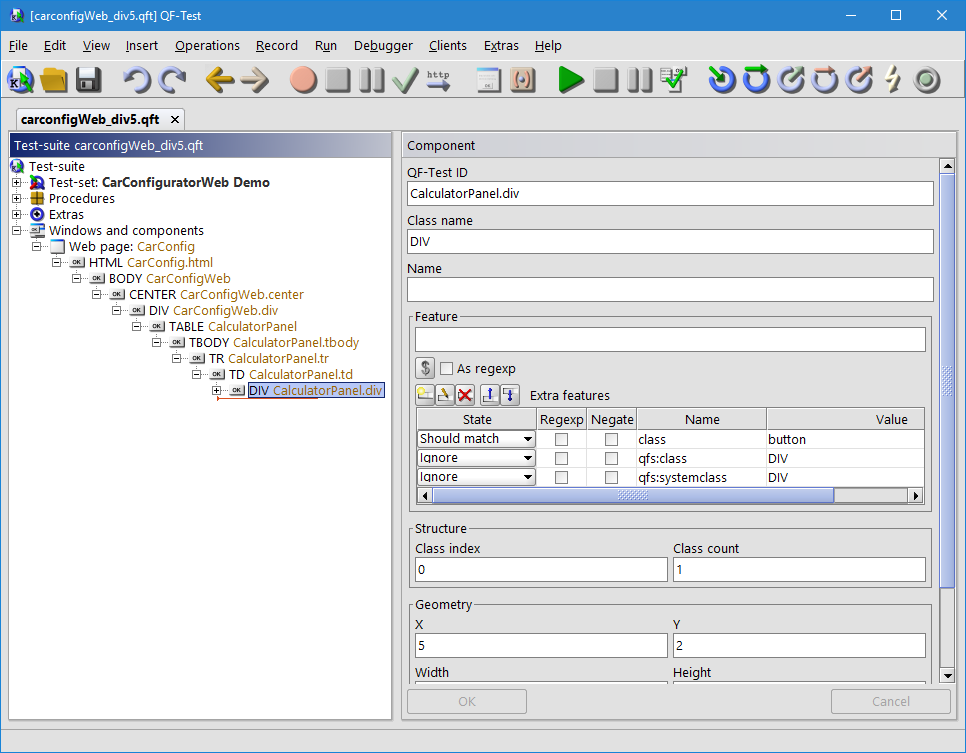
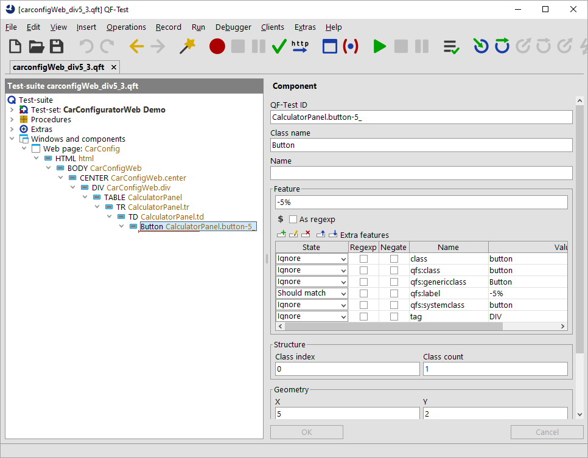

| Version 6.0.3 |
To begin with the example, we resolve the recognition of the '-5%' button in the right bottom corner. The figure below shows our goal. On the left we find the current recording without simplification steps, on the right we see the desired recording.
|
|
|
||||||
|
| Figure 47.7: Simplification due to simple class mapping | ||||||
First you should record a simple text check or a mouse click to that
button. Then jump to the recorded components via »Locate component«. There you can see that you got a
component of the class DIV and an empty name.
The other attributes don't provide anything useful.
Please note especially QF-Test didn't record the actual text of '-5%' in any
attribute. This means QF-Test has no good information for recognizing that
component. There is just the geometry and the structure information. Now let's
make this component more readable to us and the component
recognition more robust.
|
|  | ||
|
| Figure 47.8: Recording of '-5%' button in WebCarConfigurator | ||
When analyzing the recorded component more in detail we
discover that there is an extra feature class with
the value button. Now we can assume that a button in our project
will have that particular attribute. Especially after verifying the assumption
for further buttons.
So, please insert a procedure call to
qfs.web.ajax.installCustomWebResolver
from the
standard library qfs.qft below the Extras node.
As we detected the class attribute contains the
class information for QF-Test. Having detected this, we can set the parameter
genericClasses to button=Button.
The expression button=Button means
that any component of the class button will be assigned a
generic class called Button.
This will make QF-Test record the default features for
buttons when we re-record the components.
Run the procedure
qfs.web.ajax.installCustomWebResolver and re-record the
component. You will get the following recording:
|
|  | ||
|
| Figure 47.9: Recording with genericClasses in WebCarConfigurator | ||
As you can see you got a click on component
button-5_. When you jump to the recorded component
you can see the class Button
has been assigned the '-5%' for the feature as well and
and we even got the extra feature
qfs:label with that text. This
component will now be treated as button by QF-Test. Of course, you should
advise the development team to assign a dedicated ID to that
button as well.
This simple assignment of one value can be sufficient for lots of cases, especially
for buttons, menu-items or checkboxes. If your web-page doesn't contain that information
in the attribute class, but in the attribute role, then you need
to fill the parameter attributesToGenericClasses with the value role=button=Button
instead of genericClasses.
In some cases the information about the specific class will not be part of the leaf component, but
in a parent component. The next section shows how to cope with this challenge.
| Last update: 9/6/2022 Copyright © 1999-2022 Quality First Software GmbH |